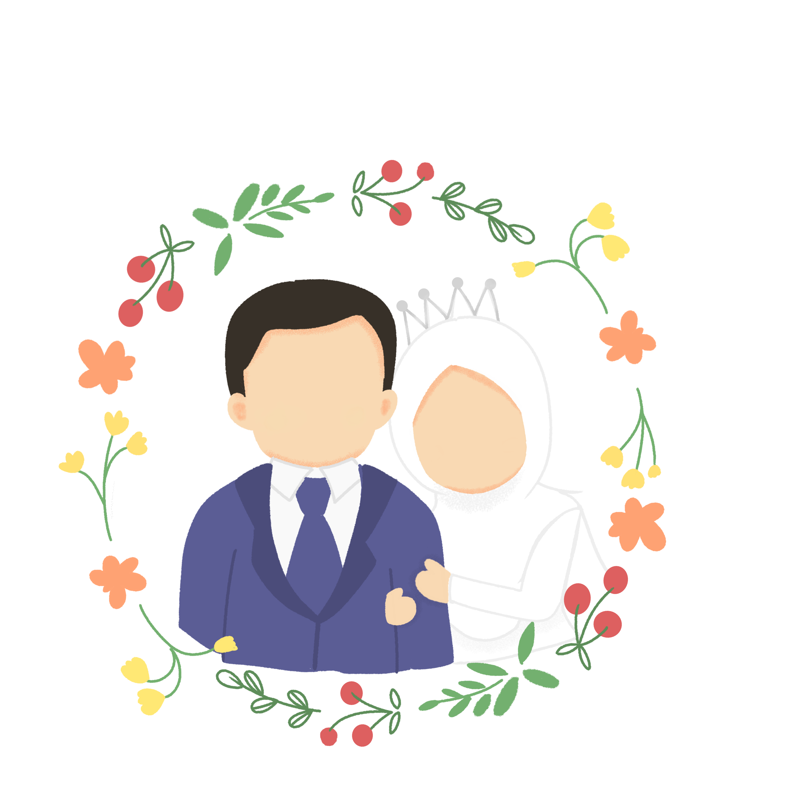

Assalamu'alaikum wr. wb.
Dengan memohon rahmat Allah Subhanahu wata'ala dan dengan
segenap kerendahan
hati,
perkenankanlah kami mengundang Bapak/Ibu Saudara/i untuk hadir di acara Tasyakuran kami.
وَمِنْ كُلِّ شَيْءٍ خَلَقْنَا زَوْجَيْنِ لَعَلَّكُمْ تَذَكَّرُوْنَ
Segala sesuatu Kami ciptakan berpasang-pasangan agar kamu mengingat (kebesaran Allah).
Q.S. Adz-Dzariyat : 49
Putri pertama dari
Bapak Benny Suryo Bakrie A.Md.Kom
dan Ibu Siti Helmiah, S.Pd

Putra pertama dari
Bapak Sudarmanto dan Ibu Meydiana
Sabtu, 3 Februari 2024
Pukul 13:00 WIB - Selesai
Perum. Bambu Kuning blok A7 no.8
Batu Aji, Batam
Perum. Bambu Kuning (Puskopkar) Blok A7 no.8
Batu Aji - Batam (Depan Lapangan Voli blok A)
Petunjuk Lokasi
بَارَكَ اللَّهُ لَكَ وَبَارَكَ عَلَيْكَ وَجَمَعَ بَيْنَكُمَا فِى خَيْرٍ
"Semoga Allah memberkahimu ketika bahagia dan ketika susah dan mengumpulkan kalian berdua dalam kebaikan.”
(HR. Abu Daud, no. 2130)
Tanpa mengurangi rasa hormat kami, izin menyampaikan adab menghadiri undangan untuk kenyamanan bersama
- Tidak meninggalkan shalat wajib
(HR. Muslim No. 820)
- Mendoakan kedua mempelai
(HR. Abu Dawud No. 2130)
- Mendoakan Shahibul Hajat (Tuan Rumah) setelah Makan
(HR. Muslim No. 2042)
- Memenuhi undangan Walimah
(HR. Bukhari No. 5173, HR. Muslim)
- Menggunakan pakaian yang sopan, Muslimah menutupi auratnya
(QS. 24:31)
- Memberkahi makanan, menghindari makanan mubazir
(HR. Muslim No. 1607)
- Makan dengan tangan kanan
(HR. Bukhari No. 5376, HR. Muslim No. 2022)
- Makan dengan duduk, tidak sambil berdiri
(HR. Muslim No. 2024)
Merupakan suatu kebahagiaan & kehormatan bagi kami, apabila Bapak/Ibu/Saudara/i, berkenan hadir dan memberikan doa restu kepada kedua mempelai
Hormat Kami yang Berbahagia
Ridlo & Aura